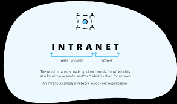

Definition: An intranet is a private network that uses Internet protocol technology to share information, resources, and services within an organization.
It functions as a secure internal communication platform, allowing employees to access company data, collaborate on projects, and communicate with each other efficiently.
For example, an intranet can be used by a company to provide a centralized location for employees to find important documents, access internal databases, and communicate with their colleagues.